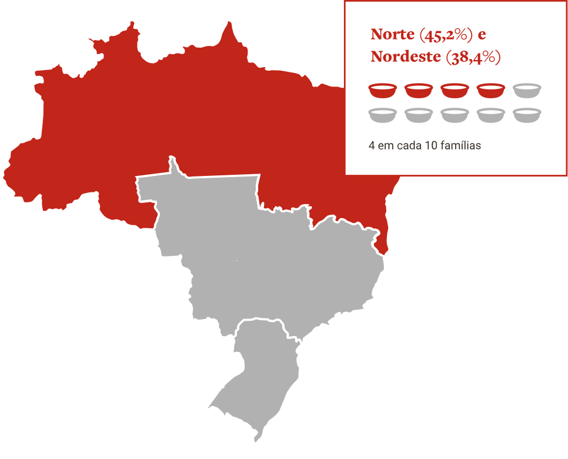

Insegurança alimentar
O Mapa da Fome é uma ferramenta que apresenta o número de pessoas que enfrentam a fome e a insegurança
alimentar no mundo. O Mapa aponta os países em que existem populações que não têm acesso à alimentação,
têm acesso inadequado ou insuficiente para uma vida saudável.
Publicado pela FAO anualmente no relatório “O estado da segurança alimentar e da nutrição no mundo”,
esse relatório apresenta a fome e a insegurança alimentar no mundo, por região e por país.
Leve
atinge 28% dos brasileiros. É quando a família tem preocupação ou incerteza quanto ao acesso aos alimentos no futuro, com qualidade inadequada resultante de estratégias que visam não comprometer a quantidade de alimentos.
Moderada
atinge 15,2% dos brasileiros. É quando há redução quantitativa de alimentos entre os adultos e/ou ruptura nos padrões de alimentação resultante da falta de alimentos.
Grave
atinge 15,5% dos brasileiros. É quando há redução quantitativa de alimentos entre as crianças e/ou ruptura nos padrões de alimentação resultante da falta de alimentos.

Taxa de prevalência de insegurança alimentar moderada ou grave por ano no Brasil:
Taxa de prevalência de insegurança alimentar grave por ano no Brasil:
Em média, considerando todas as regiões, 3 em cada 10 famílias relataram incerteza quanto ao acesso a alimentos em um futuro próximo e preocupação em relação à qualidade da alimentação no futuro imediato. 4 em cada 10 famílias das regiões Norte e Nordeste, 3 em cada 10 das regiões Centro-Oeste e Sudeste, e 2 em cada 10 da região Sul relataram redução parcial ou severa no consumo de alimentos nos três meses que antecederam as entrevistas do II VIGISAN. As formas mais severas de insegurança alimentar (moderada ou grave) atingem fatias maiores da população nas regiões norte (45,2%) e nordeste (38,4%).

8,2% das famílias relataram sensação de vergonha, tristeza ou constrangimento para garantir o que comer. Dessas, 24,3% convivem com as manifestações mais severas de insegurança alimentar (moderada e grave).